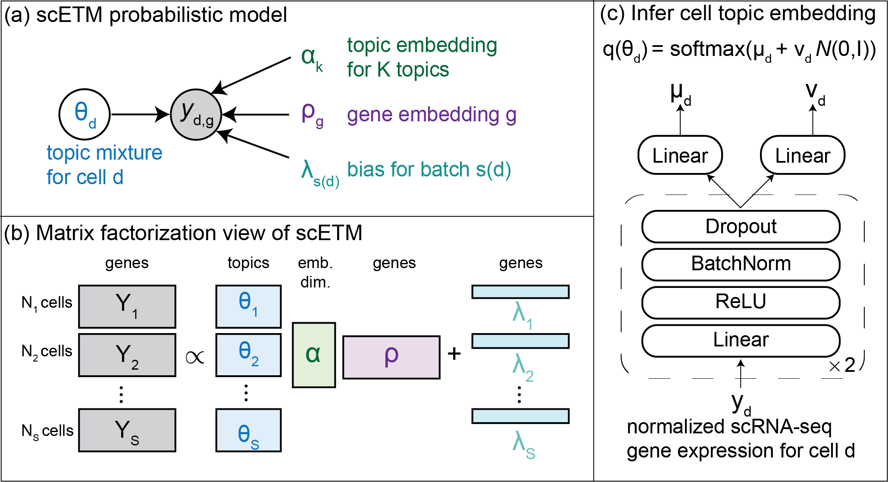
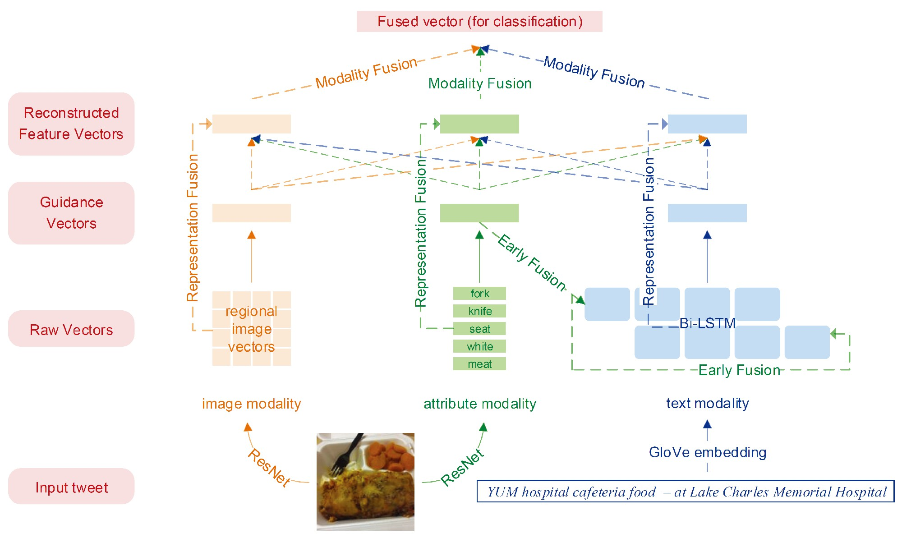

Huiyu CAI 蔡辉宇¶
I am a fourth-year undergraduate at the Department of Machine Intelligence, Peking University. I was previously a member of the Language Computing and Web Mining Group, led by Prof. Xiaojun Wan. This autumn, I will continue my studies at MILA under the supervision of Jian Tang.
I am interested in deep generative models, graph representation learning and their wide applications, such as drug discovery, single-cell modeling, etc.
Selected Publications¶

- Learning interpretable cellular and gene signature embeddings from single-cell transcriptomic data
bioRxiv, 2020 code
Yifan Zhao*, Huiyu Cai*, Zuobai Zhang, Jian Tang, Yue Li
*Equal contribution

- Multi-Modal Sarcasm Detection in Twitter with Hierarchical Fusion Model
ACL, 2019 data
Yitao Cai, Huiyu Cai, Xiaojun Wan
For-Fun Projects¶
- Implementation of the EWLS Algorithm for the Maximum Clique Problem (Dec. 2020 - Jan. 2021)
- Music Source Separation: Theory and Applications (Apr. 2020 - Jun. 2020)
- Raiden Game Implementation in Java (Jan. 2020 - Jun. 2020)
- Fine-grained Face Manipulation via DLGAN (Oct. 2019 - Jan. 2020)
- Bird Sound Classification via CNN (Mar. 2019 - Jun. 2019)
- Mahjong AI Based on Supervised Learning (Mar. 2019 - Jun. 2019)
- Rule-based Doudizhu & Ataxx & Reversi & pysc2-minimap AI (Oct. 2017 - May. 2019)
Change Color Palette¶
Click on a tile to change the color scheme:
Click on a tile to change the primary color:
Click on a tile to change the accent color: